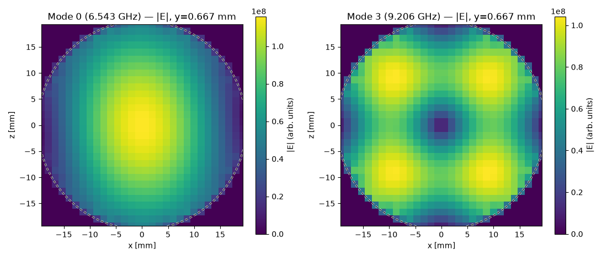
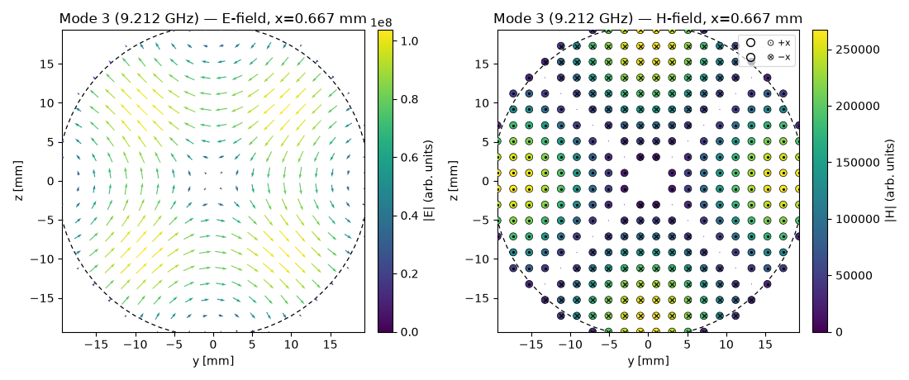

Note
Go to the end to download the full example code.
Eigenmode analysis: a spherical cavity#
All previous tutorials solved driven problems: a port launches a
wave, the solver computes what scatters where. This one introduces
the second analysis type. A closed cavity has no ports and no
excitation — it has eigenmodes: the discrete set of field patterns
and resonant frequencies the geometry supports on its own.
AnalysisEigenmode computes them directly.
The perfect benchmark is a sphere: its resonances are known in closed form from the zeros of spherical Bessel functions, so every computed frequency can be checked to a fraction of a percent — including the degeneracies that the spherical symmetry dictates.
The problem#
A perfectly conducting spherical shell of radius \(R\) encloses vacuum. Its resonant frequencies are \(f = k R \cdot c_0 / (2 \pi R)\) with \(kR\) a root of a spherical Bessel condition. The three lowest levels:
mode |
\(kR\) |
degeneracy |
|---|---|---|
TM (n=1) |
2.74371 |
3 |
TM (n=2) |
3.87024 |
5 |
TE (n=1) |
4.49341 |
3 |
The degeneracies follow from symmetry — the lowest TM mode is a dipole-like pattern that exists in three independent orientations, so the spectrum contains that frequency three times. With \(R = 20\) mm the first two levels sit at 6.546 GHz and 9.233 GHz; the eight lowest eigenmodes are exactly these two clusters (3 + 5).
import math
import matplotlib.pyplot as plt
import magnelio as mio
from magnelio import geo
from magnelio.constants import *
R = 20e-3 # cavity radius [m]
levels = [("TM n=1", 2.743707, 3), ("TM n=2", 3.870239, 5)]
for name, kr, g in levels:
print(f"{name}: {kr * C0 / (2 * math.pi * R) / 1e9:.4f} GHz (x{g})")
TM n=1: 6.5456 GHz (x3)
TM n=2: 9.2331 GHz (x5)
Model and mesh#
The cavity is literally a hole in metal: a PEC background with an
air-filled Sphere carved into it — the same
trick that gave the coax tutorials their shield for free. No ports,
no boundary declaration (the default all-PEC closure is exactly the
cavity wall). The curved wall cuts through the rectangular grid;
the partially filled cells are handled by the conformal boundary
treatment, which is what makes sub-percent accuracy possible at
this modest resolution.
model = mio.GeometryModel(background="pec")
model.add(geo.Sphere(center=(0, 0, 0), radius=R, material="air"))
mesh = mio.Mesh.from_geometry(model, mio.MeshControl(max_cell_size=1.5e-3), f_max=11e9)
print(f"grid: {mesh.Nx} x {mesh.Ny} x {mesh.Nz} cells")
grid: 30 x 30 x 30 cells
Solving for the eigenmodes#
n_modes asks for the eight lowest physical modes — the two
complete degenerate clusters. The result carries the resonant
frequencies and the full 3D field pattern of every mode.
result = mio.AnalysisEigenmode(mesh=mesh, n_modes=8, verbose=False).run()
for i, fi in enumerate(result.frequencies):
print(f"mode {i}: {fi / 1e9:.4f} GHz")
mode 0: 6.5461 GHz
mode 1: 6.5461 GHz
mode 2: 6.5472 GHz
mode 3: 9.2116 GHz
mode 4: 9.2120 GHz
mode 5: 9.2131 GHz
mode 6: 9.2403 GHz
mode 7: 9.2423 GHz
The spectrum shows exactly the predicted structure — a triplet and a quintet:
for name, kr, g in levels:
f_ana = kr * C0 / (2 * math.pi * R)
cluster = [fi for fi in result.frequencies if abs(fi / f_ana - 1) < 0.02]
errs = [100 * (fi / f_ana - 1) for fi in cluster]
print(
f"{name}: analytic {f_ana / 1e9:.4f} GHz, found {len(cluster)} modes, "
f"deviations {min(errs):+.3f} % .. {max(errs):+.3f} %"
)
TM n=1: analytic 6.5456 GHz, found 3 modes, deviations +0.008 % .. +0.025 %
TM n=2: analytic 9.2331 GHz, found 5 modes, deviations -0.233 % .. +0.100 %
The triplet lands within 0.03 % of the Bessel value, the quintet within 0.25 %. On the ideal sphere each cluster would be exactly degenerate; the rectangular grid breaks the symmetry weakly, so the computed cluster is split by that same small amount — the split is a discretisation fingerprint, not physics.
Looking at a mode#
result.plot() draws any mode on an axis-aligned slice through
the cavity: normal and position select the plane,
component the field quantity, and plot_type switches between
colour map, contours, and arrows. The mode fields live on the
staggered simulation grid; the plot interpolates them onto a common
set of points internally, so a picture is one call. Amplitudes are
in arbitrary units — an eigenmode has no absolute scale, only a
shape. Passing the geometry model overlays its cross-section: the
dashed circle is the cavity wall, sliced from the actual model:
fig, axes = plt.subplots(1, 2, figsize=(11, 4.6))
for ax, m in zip(axes, (0, 3)):
result.plot(
mode=m, component="E", normal="y", position=0.0, plot_type="color", geometry=model, ax=ax
)
fig.tight_layout()

Mode 0 shows the dipole-like pattern of the lowest TM resonance; mode 3, the first member of the quintet, already carries the richer angular structure of the \(n = 2\) level.
plot_type="vector" shows the field direction. Arrows draw
the in-plane part of the field; where the field pierces the slice
plane instead — tilted so far out of the plane that a projected
arrow would be unreadable — a circle marker appears: ⊙ pointing
towards the positive normal axis, ⊗ towards the negative one,
coloured by the field magnitude like the arrows. The quintet mode
from above shows both at once, and a piece of physics with them.
On this slice its E field lies entirely in the plane (left).
H is everywhere perpendicular to E, so it pierces the slice
(right): outward and inward in alternating sectors, separated by
the blank node lines of the pattern — a sign structure the ⊙/⊗
markers resolve and a magnitude plot would hide:
fig, axes = plt.subplots(1, 2, figsize=(11, 4.6))
for ax, comp in zip(axes, ("E", "H")):
result.plot(
mode=3,
component=comp,
normal="x",
position=0.0,
plot_type="vector",
geometry=model,
ax=ax,
)
fig.tight_layout()

(Which sector carries ⊙ and which ⊗ is not meaningful — the overall sign of an eigenmode is arbitrary, and inside a degenerate cluster the same holds for the mode’s orientation.)
Where to go next#
New in this tutorial: the eigenmode analysis type, degenerate mode clusters as a symmetry statement (and their weak splitting as a discretisation fingerprint), and mode field plots on slice planes through the cavity. The next tutorials turn to the toolbox around the solvers — starting with field monitors, which record fields during a driven simulation.
Total running time of the script: (0 minutes 16.589 seconds)